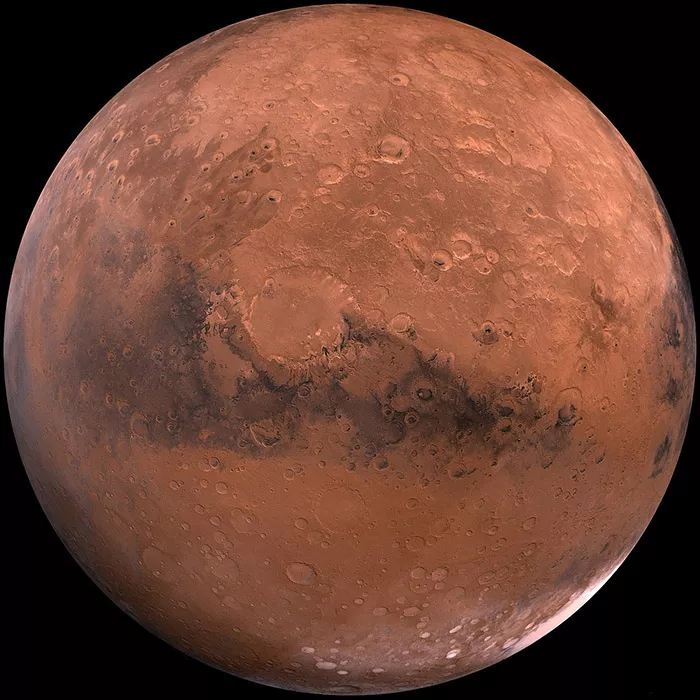

Marte
Introdução
Marte é o quarto planeta do Sistema Solar em ordem de distância ao Sol. Conhecido como o Planeta Vermelho em razão da coloração avermelhada de sua superfície, causada pela presença de óxido de ferro (FeO), Marte é um dos planetas mais estudados da astronomia moderna.
Características Físicas
Com diâmetro de aproximadamente 6.779 km, Marte tem cerca de metade do tamanho da Terra. Abriga o Monte Olimpo (Olympus Mons), o maior vulcão do Sistema Solar, com 21 km de altitude, e o Vale Mariner (Valles Marineris), um cânion com mais de 4.000 km de extensão.

Atmosfera
A atmosfera marciana é extremamente tênue, composta por cerca de 95% de CO₂, 2,6% de nitrogênio e 1,9% de argônio. A pressão atmosférica é inferior a 1% da pressão terrestre, o que impossibilita a existência de água líquida estável na superfície nas condições atuais.
Exploração Espacial
Marte é o planeta mais explorado além da Terra. Desde a missão Mariner 4 na década de 1960, dezenas de orbitadores e rovers (como o Curiosity e o Perseverance) têm estudado a geologia marciana em busca de sinais de água líquida no passado e possíveis bioassinaturas.
Dados Comparativos
- Diâmetro: 6.779 km
- Massa: 0,107 massas terrestres
- Gravidade: 3,72 m/s²
- Dia (Rotação): 24h 37m
- Luas: 2 (Fobos e Deimos)
Citação Científica
"Marte é um mundo de maravilhas e mistérios, o único planeta onde sabemos com certeza que nossa tecnologia pode pousar e explorar extensamente."